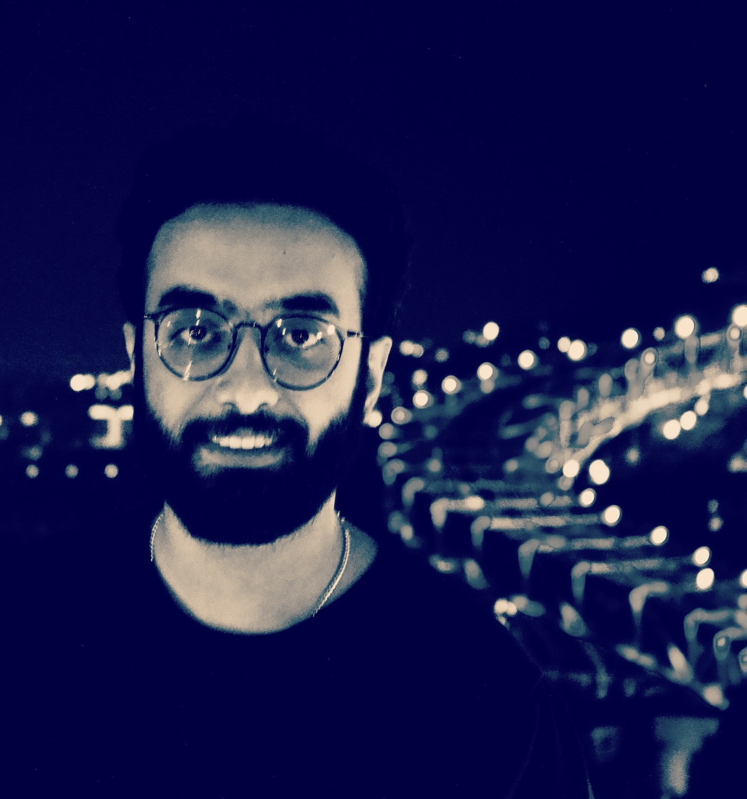
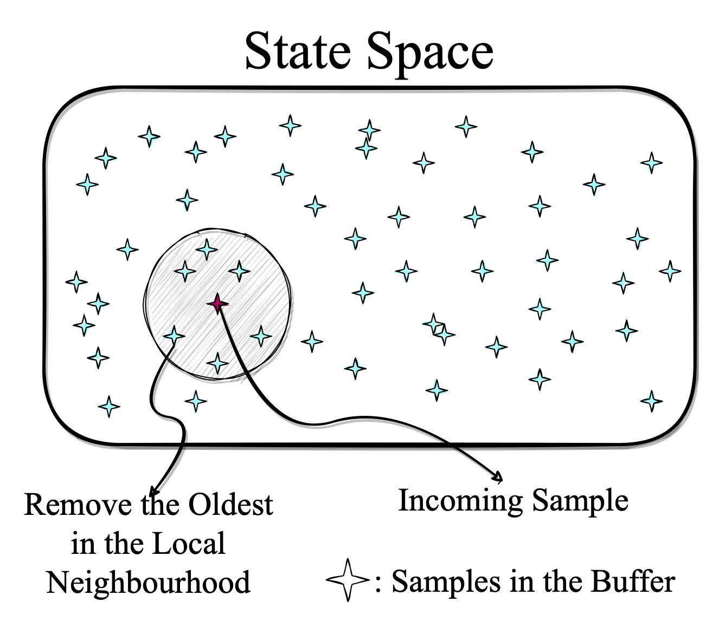
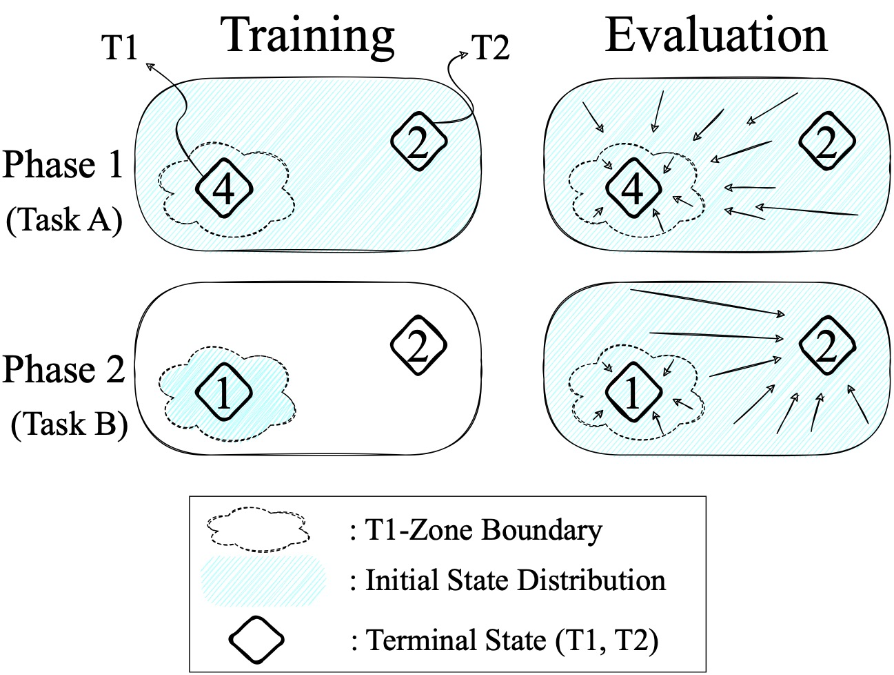
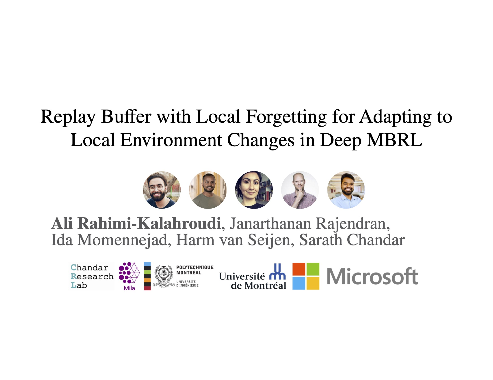

My name is Ali Rahimi Kalahroudi (Written as "_علی رحیمیکلهرودی_" in my native language—Persian). I am currently a research assistant at Mila - Quebec AI under the supervision of Prof. Sarath Chandar.
My ultimate research goal is to develop AI agents capable of solving diverse tasks given minimal supervision.
I am currently interested in designing reliable machine learning (ML) algorithms for sequential decision-making in open-ended interaction settings. In these contexts, the algorithms must learn and continually adapt their skills and knowledge. To tackle these challenges, my approach centers on leveraging model-based learning mechanisms. This involves empowering AI agents with the capability to construct and utilize world models and employing planning to enhance their decision-making processes.
Bio: Perviously I received my M.Sc. in computer science at the University of Montreal and Mila.
Hobbies: While I am not doing science, I enjoy reading books, watching movies, playing football and volleyball, and hiking.

| Sep 15, 2023 | My M.Sc. thesis was accepted with an Exceptional Grade (extremely rare at Mila/UdeM). |
| May 15, 2023 | Our work on introducing the LoFo Buffer for adaptive deep MBRL methods got accepted (Oral Presentation) at CoLLAs 2023. (Also presented at the Neurips 2022 Workshop on Deep Reinforcement Learning.) |
| May 14, 2022 | Our work on evaluating the adaptivity of MBRL methods Improved-LoCA got accepted at the ICML 2022. (Also presented at the ICLR 2022 workshop on Agent Learning in Open-Endedness[Spotlight], and RLDM 2022.) |

@InProceedings{rahimi2023replay,
author = {Ali Rahimi-Kalahroudi and Janarthanan Rajendran and Ida Momennejad and Harm Van Seijen and Sarath Chandar},
title = {Replay Buffer with Local Forgetting for Adapting to Local Environment Changes in Deep Model-Based Reinforcement Learning},
booktitle = {Proceedings of the Conference on Lifelong Learning Agents (CoLLAs)},
year = {2023},
}
@InProceedings{pmlr-v162-wan22d,
author = {Yi Wan and Ali Rahimi-Kalahroudi and Janarthanan Rajendran and Ida Momennejad and Sarath Chandar and Harm Van Seijen},
title = {Towards Evaluating Adaptivity of Model-Based Reinforcement Learning Methods},
booktitle = {Proceedings of the International Conference on Machine Learning (ICML)},
year = {2022},
}